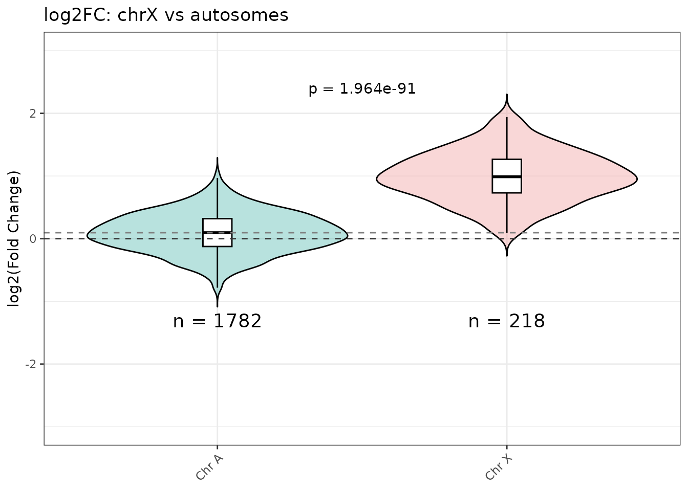
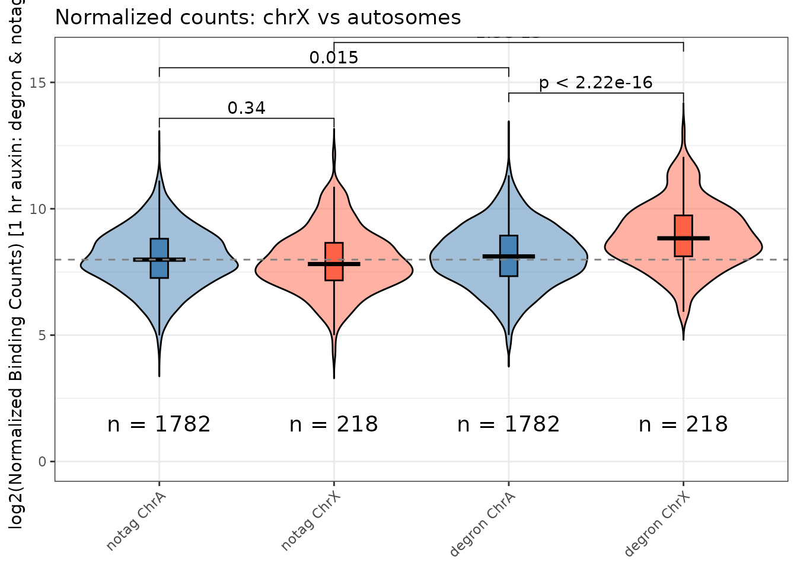
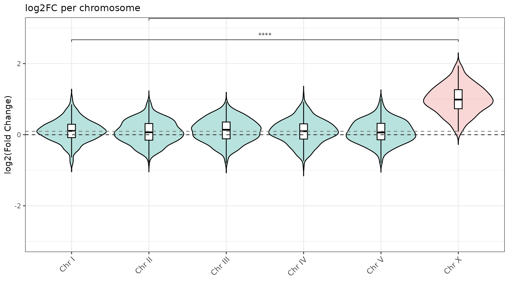
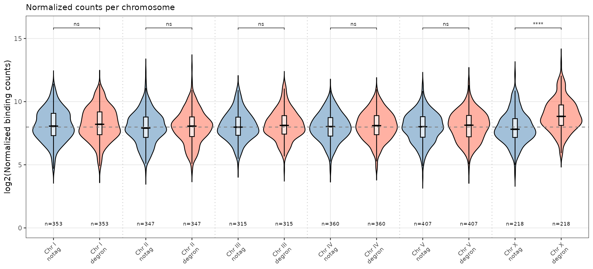

library(ercantools)
library(magrittr)
data(example_peaks)Overview
The violin functions compare binding distributions between chromosomes. Four functions cover the main use cases:
| Function | Y-axis | Groups |
|---|---|---|
violin_log2FC() |
log2FC | chrX vs pooled autosomes |
violin_counts() |
Normalized counts | chrX vs autosomes, 2 conditions |
violin_log2FC_all_chr() |
log2FC | Each chromosome separately |
violin_counts_all_chr() |
Normalized counts | Each chromosome x 2 conditions |
violin_log2FC()
Compares chrX peaks against all autosomes pooled. A Welch t-test p-value is annotated automatically.
violin_log2FC(
object = example_peaks,
title = "log2FC: chrX vs autosomes",
ylab = "log2(Fold Change)",
chr_of_interest = "chrX",
ylim = c(-3, 3),
pvalue_y_position = 2.5
)
violin_counts()
Shows four groups: baseline-A, baseline-X, condition-A, condition-X.
violin_counts(
object = example_peaks,
title = "Normalized counts: chrX vs autosomes",
conc_condition = "Conc_degron",
condition_name = "degron",
conc_baseline = "Conc_notag",
baseline_name = "notag",
ylim = c(0, 16),
label.y_plot = c(13, 14, 15, 16)
)
#> Warning: Using `size` aesthetic for lines was deprecated in ggplot2 3.4.0.
#> ℹ Please use `linewidth` instead.
#> ℹ The deprecated feature was likely used in the ercantools package.
#> Please report the issue at <https://github.com/ercanlab/ercantools/issues>.
#> This warning is displayed once per session.
#> Call `lifecycle::last_lifecycle_warnings()` to see where this warning was
#> generated.
violin_log2FC_all_chr()
One violin per chromosome with significance brackets vs chrX.
violin_log2FC_all_chr(
object = example_peaks,
title = "log2FC per chromosome",
ylab = "log2(Fold Change)",
chr_of_interest = "chrX",
ylim = c(-3, 3)
)
violin_counts_all_chr()
Two paired violins per chromosome separated by condition.
violin_counts_all_chr(
object = example_peaks,
title = "Normalized counts per chromosome",
conc_condition = "Conc_degron",
condition_name = "degron",
conc_baseline = "Conc_notag",
baseline_name = "notag",
ylim = c(0, 16)
)